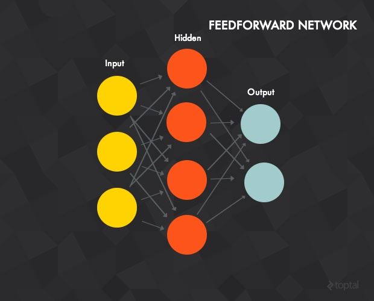
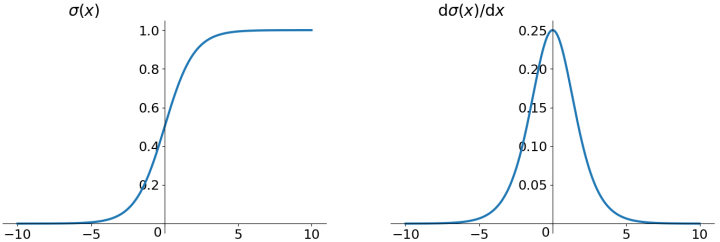
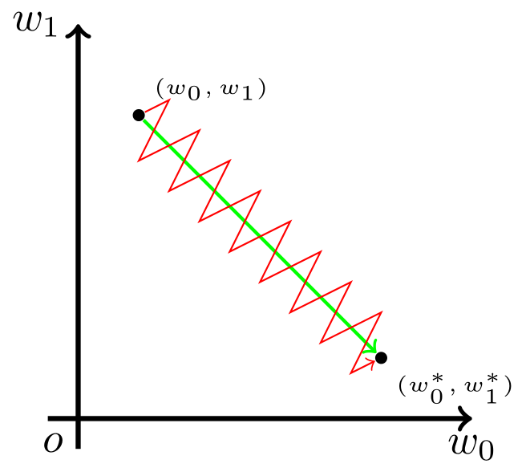
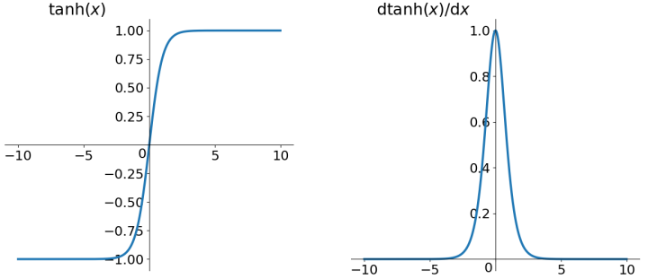
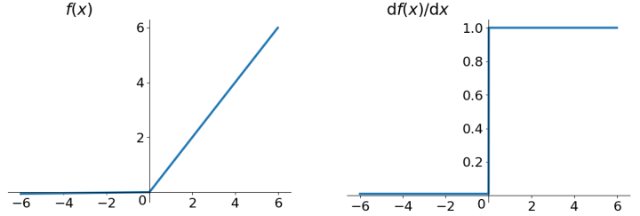
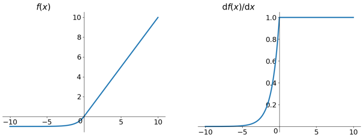
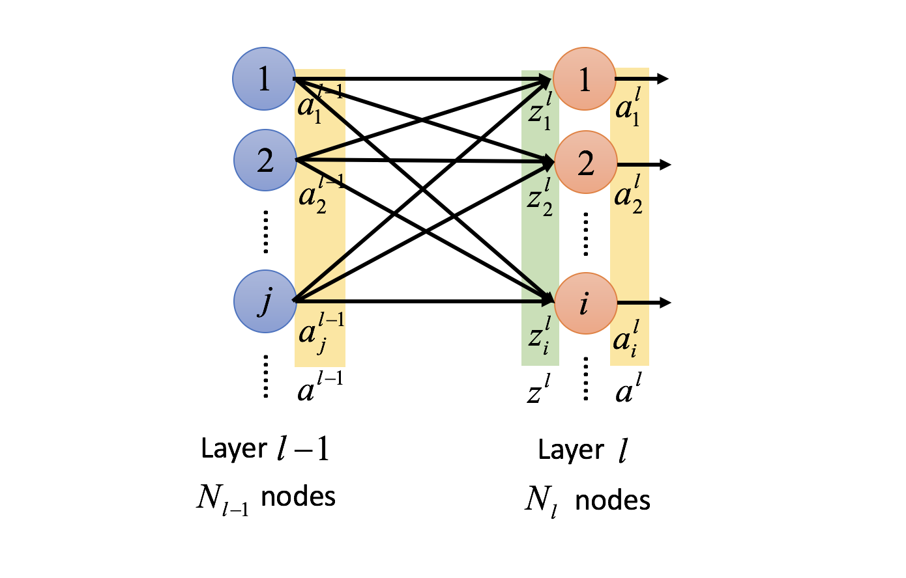
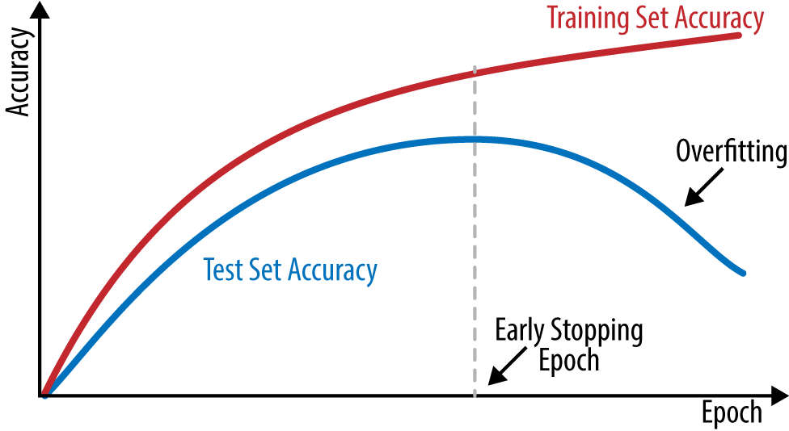

本文为整理笔记。
简介
多层感知器(Multilayer Perceptron)是前馈人工神经网络的一种，一个多层感知器至少包含三层节点：输入层，隐藏层，输出层，除了输入节点，每个节点都是一个包含非线性激活函数(nonlinear activation function)的神经元。多层感知器使用反向传播算法训练。

“多层感知器” 一词不是指一个有很多层的感知器。而是包含了许多组织成层的感知器。另一说法是多层感知器网络。此外，多层感知器中的 “感知器” 并不是严格的意义上的感知器。真正的感知器是人工神经元的一种特殊情况，其激活函数为阈值激活函数如阶跃函数Heaviside step function。多层感知器可以使用任意的激活函数。真正的感知器执行二进制分类，多层感知器的神经元可以进行分类 ( 离散值预测 ) 或回归 ( 连续值预测 ) ，这取决于它的激活功能。
激活函数
激活函数通常使用非线性激活函数。常见的激活函数有
Sigmoid 函数：

优点是它是便于求导的平滑函数
缺点如下：
-
容易出现梯度消失
优化神经网络的方法是Back Propagation，即导数的后向传递：先计算输出层对应的loss，然后将loss以导数的形式不断向上一层网络传递，修正相应的参数，达到降低loss的目的。 Sigmoid函数在深度网络中常常会导致导数逐渐变为0，使得参数无法被更新，神经网络无法被优化。原因在于两点：
-
在上图中容易看出， 当中 较大或较小时，导数接近0，而后向传递的数学依据是微积分求导的链式法则，当前层的导数需要之前各层导数的乘积，几个小数的相乘，结果会很接近0
-
Sigmoid导数的最大值是0.25，这意味着导数在每一层至少会被压缩为原来的1/4，通过两层后被变为1/16，…，通过10层后为1/1048576。请注意这里是“至少”，导数达到最大值这种情况还是很少见的。
-
-
函数输出不以0为中心
Sigmoid函数的输出值恒大于0，这会导致模型训练的收敛速度变慢。举例来讲，对 ，如果所有的 均为正数或负数，那么其对 的导数总是正数或负数，这会导致如下图红色箭头所示的阶梯式更新，这显然并非一个好的优化路径。深度学习往往需要大量时间来处理大量数据，模型的收敛速度是尤为重要的。所以，总体上来讲，训练深度学习网络尽量使用zero-centered数据 (可以经过数据预处理实现) 和zero-centered输出。

-
幂运算比较耗时
其解析式中含有幂运算，计算机求解时相对来讲比较耗时。对于规模比较大的深度网络，这会较大地增加训练时间。
tanh 函数

解决了 zero-centered 问题，其他问题仍然存在。
ReLU 函数

ReLU函数其实就是一个取最大值函数，注意这并不是全区间可导的，但是我们可以取sub-gradient，如上图所示。ReLU虽然简单，但却是近几年的重要成果，有以下几大优点：
- 解决了gradient vanishing问题 (在正区间)
- 计算速度非常快，只需要判断输入是否大于0
- 收敛速度远快于
sigmoid和tanh
存在的问题：
- ReLU的输出不是zero-centered
- Dead ReLU Problem，指的是某些神经元可能永远不会被激活，导致相应的参数永远不能被更新。有两个主要原因可能导致这种情况产生:
- 非常不幸的参数初始化，这种情况比较少见
- learning rate太高导致在训练过程中参数更新太大，不幸使网络进入这种状态。解决方法是可以采用 Xavier 初始化方法，以及避免将learning rate设置太大或使用 adagrad 等自动调节 learning rate 的算法。
Leaky ReLU

解决了 Dead ReLU Problem，但是在实际操作当中，并没有完全证明 Leaky ReLU 总是好于 ReLU。
ELU函数

ELU 也是为解决 ReLU 存在的问题而提出，显然，ELU 有 ReLU 的基本所有优点，以及：
- 不会有 Dead ReLU 问题
- 输出的均值接近0，zero-centered
它的一个小问题在于计算量稍大。类似于 Leaky ReLU，理论上虽然好于 ReLU，但在实际使用中目前并没有好的证据证明 ELU 总是优于 ReLU。
层 ( Layers )
多层感知器包含三层或更多的层，由于多层感知器是全连接的，一层中的所有节点都基于权重值和下一层的每一个节点相连接。

学习
学习过程通过处理每一块数据并根据输出和理想值的误差来更新各个神经元之间的连接的权重值进行，过程使用反向传播算法。使用误差 表示输出节点 在输入第 个数据点，其值为 。其中 表示目标值， 表示感知器的输出值。 节点的权重值通过最小化误差值进行调整，例如将总的误差值表示如下：
使用梯度下降法，每一个权重值的梯度：
其中 为前一层的输出， 为学习率， 为当前层的输入。 对于输出层有
隐藏层的计算：
其中 表示后一层的第 个节点。
损失函数
回归问题损失
均方误差 / L2 Loss
顾名思义，均方误差测量为预测与实际观测之间差的平方的平均值。 它只关注平均误差幅度而不管它们的方向。 并且由于平方，远离实际值的预测会得到更大的误差值。 均方误差具有很好的数学特性，可以更容易地计算梯度。
平均绝对误差 / L1 Loss
另一方面，平均绝对误差被测量为预测和实际观察之间的绝对差之和的平均值。 与MSE一样，这也可以在不考虑方向的情况下测量误差的大小。 与MSE不同，MAE需要计算梯度稍微复杂。 另外由于它不使用平方，所以对异常值更加鲁棒。
分类问题损失
交叉熵损失 / Negative Log Likelihood
这是分类问题的最常见使用的损失。 随着预测值偏离实际值，交叉熵损失的值增加。
请注意，当实际标签为 时，函数的后半部分消失，而如果实际标签为 ，则前半部分将被删除。 简而言之，我们只是将预测值的对数乘以实际值的部分。 这一点的一个重要方面是交叉熵损失在预测值置信度高且错误时值很大。
梯度下降
梯度下降变体
批梯度下降
由于我们需要计算整个数据集的梯度以仅执行一次更新，因此批量梯度下降可能非常慢并且对于占用内存过大的数据集而言难以处理。
随机梯度下降
批量梯度下降对大型数据集执行了很多冗余计算，因为它会在每个参数更新之前对相似的样本重新计算梯度。 SGD通过一个样本执行一次更新来消除此冗余。 因此，它通常更快，也可用于在线学习。
小批量梯度下降
小批量梯度下降对两种方案进行了这种，为每个小批量的 n 个训练样例执行更新：
梯度下降优化算法
Momentum
基本上，当我们将球推下山。 当球滚下坡时，球会积聚动量，在途中变得越来越快（如果有空气阻力，即 γ<1，则最终会达到其最终速度）。 我们的参数更新相似：动量项会增加和之前方向相同的梯度分量，并减少梯度更改方向的分量的更新。 最后，算法可以更快的收敛并且减少振荡。
Nesterov accelerated gradient （NAG）
动量法每下降一步都是由前面下降方向的一个累积和当前点的梯度方向组合而成。NAG 先按照历史梯度往前走那么一小步，然后在此时位置再修正当前一步的梯度方向。如此一来，有了超前的眼光，小球就会更加”聪明“, 这种方法被命名为Nesterov accelerated gradient 简称 NAG。
Adagrad
Adagrad是一种基于梯度的优化算法，它可以实现这一点：它使学习速率适应参数，与频繁出现的特征相关的参数执行较小的更新（即低学习率），与不频繁特征相关的参数执行的较大更新（即高学习率）。因此，它非常适合处理稀疏数据。
RMSprop
为了解决Adagrad急剧减少的学习率，RMSprop 将学习率除以指数衰减的平方梯度平均值。
Adam
自适应矩估计（Adam）是另一种计算每个参数的自适应学习速率的方法。 除了存储过去平方梯度的指数衰减平均值（如Adadelta和RMSprop）之外，Adam还保持过去梯度的指数衰减平均值
，类似于动力。我们分别计算过去和过去的平方梯度 和 的衰减平均值，如下所示：
在初始时间步骤中，或者当衰减率很小时(即 β_1 和 β_2 接近1)，它们的值会偏向零。抵消这种偏向通过计算 bias-corrected 估计：
\hat m_t&=\frac{m_t}{1-\beta_1^t} \hat v_t&=\frac{v_t}{1-\beta_2^t}然后使用上面的结果进行更新：
Regularization
深度学习面临的最常见问题之一是过度拟合。 此时会出现测试数据效果很好但无法预测测试数据的情况。此时可以使用下面的方法：
L1 / L2 正则化
由于添加正则化项，权重矩阵的值会降低。因为它基于假定一个神经网络权重矩阵值较小会产生较为的简单的模型，因此，它可以减少一定程度的过度拟合。
Dropout
Dropout 在每次迭代时，随机选择一些节点和删除他们所有的传入和传出参数再进行参数值更新。所以每次迭代都对一组不同的节点进行参数更新。

数据增强
减少过度拟合的最简单的方法是增加训练数据的大小，但在机器学习中增加代标签的数据太昂贵。数据增强，对有限的训练数据通过某种变换操作，从而生成新数据。举图像的例子来说，有一些方法可以提高训练数据的大小，例如旋转图像、翻转、缩放、转移等等。

Early stopping
早期停止是一种交叉验证的策略，我们保持一个训练集的一部分为验证集。当我们看到验证集的性能恶化时，我们立即停止训练模型，这被称为早期停止。

参考资料
- 聊一聊深度学习的activation function
- Multilayer perceptron
- 深度神经网络为何很难训练
- 深度学习综述
- Common Loss functions in machine learning
- Basic Structure: Fully Connected Feedforward Network
- Optimization for Deep Learning Highlights in 2017
- An overview of gradient descent optimization algorithms
- An Overview of Regularization Techniques in Deep Learning (with Python code)
- Chapter 4. Fully Connected Deep Networks
- Data Augmentation | How to use Deep Learning when you have Limited Data — Part 2